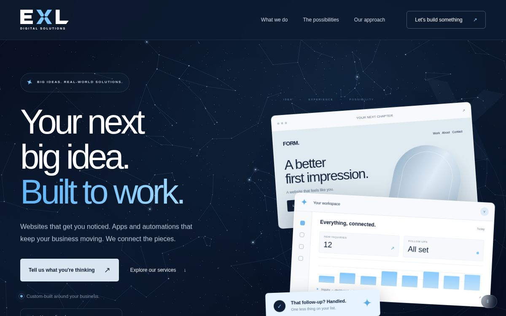
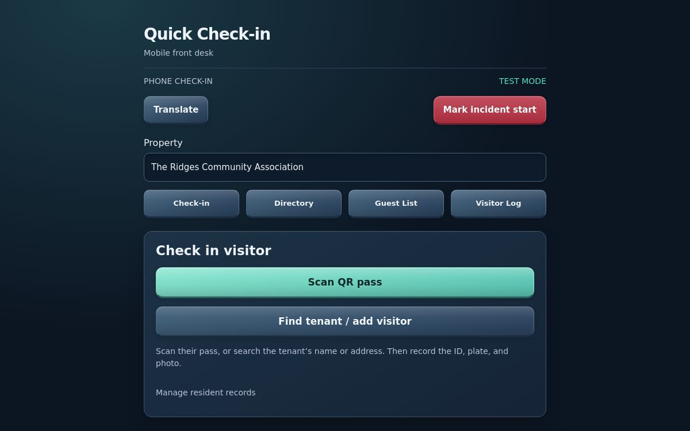
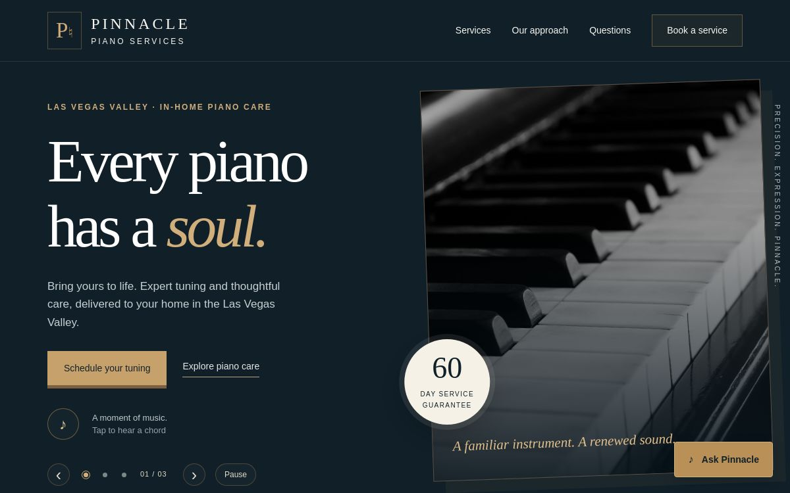
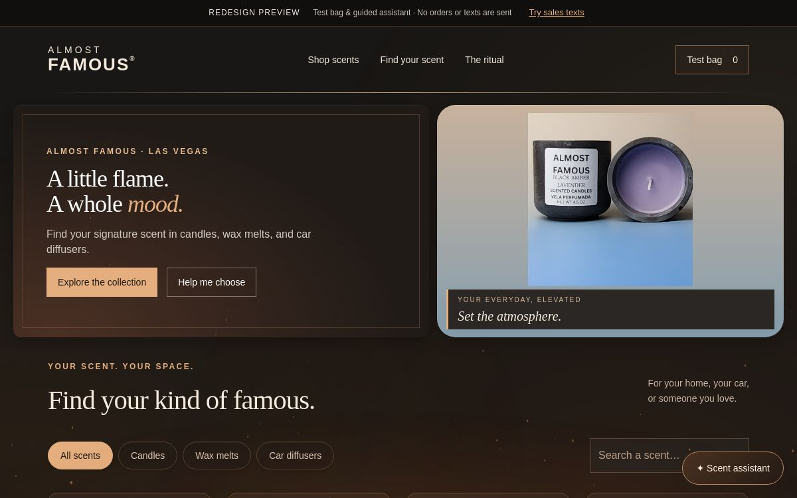
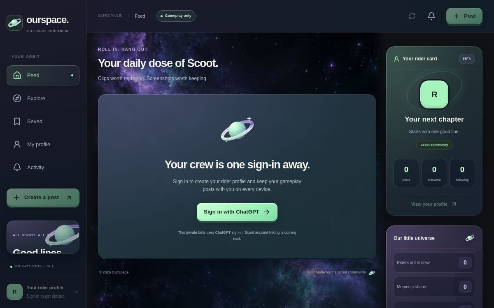
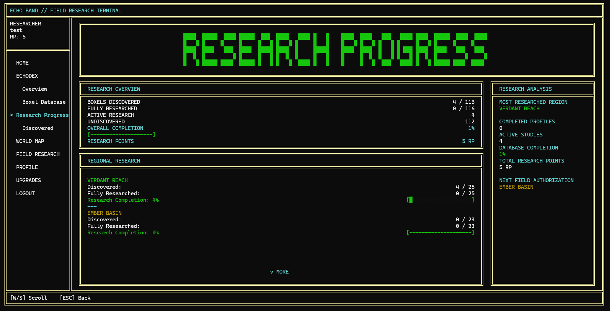
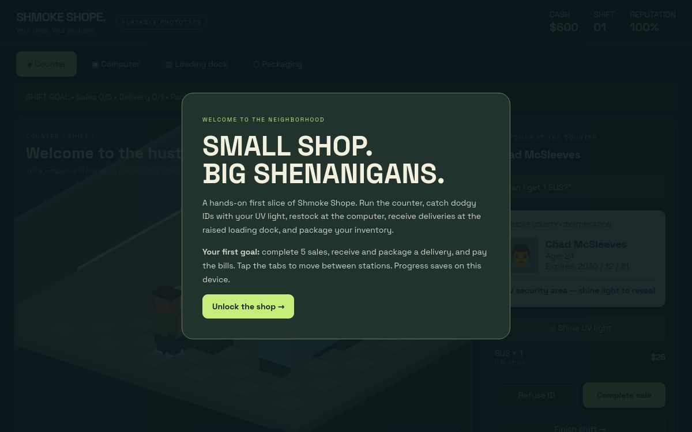
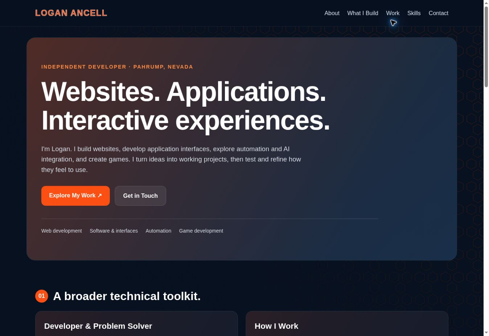

Developer & Problem Solver
I'm a Game Development B.S. student at Full Sail University and an independent developer whose work now spans websites, software interfaces, automation projects, and games. I enjoy figuring out how a system works and making it easier for someone else to use.
How I Work
I break a project into practical features, build a usable version, and improve it through testing and feedback. My background in customer service, management, and security operations brings clear communication, attention to detail, and experience following established procedures.
WEB DEVELOPMENT
Websites With Personality
Business websites and portfolios with responsive layouts, interactive sections, animated backgrounds, and clear navigation. I refine the experience for both desktop and mobile use.
HTML & CSSResponsive DesignInteractive UI
APPLICATION DEVELOPMENT
Interfaces & Software Systems
Application screens, custom front ends, and reusable program logic. My work includes C++ applications, structured data, navigation flows, and an operating-system-style interface for an emulator project.
C++Application LogicUI / UX
AUTOMATION & AI
Practical Workflow Tools
I work on automation projects and explore AI integration to simplify repeat tasks. I also use AI-assisted development to support prototyping, troubleshooting, and iteration.
Automation ProjectsAI IntegrationPrototyping
GAME DEVELOPMENT
Systems You Can Play
Gameplay prototypes, progression systems, save data, and interactive worlds. Game development is where I bring programming, interface design, and player feedback together.
GodotGameplay ProgrammingSystems Design
Actual screens from my websites, applications, and playable prototypes. Select any screenshot for a closer look.

Expand screenshot ↗
WEBSITE · SERVICE SHOWCASE
EXL Digital Solutions
A service-focused website with a constellation background, animated sections, interactive service panels, and guided inquiry selections.
Web DesignResponsive LayoutInteractive UI

Expand screenshot ↗
APPLICATION · ACCESS CONTROL PROTOTYPE
Butterfly Guest Check-in
An independent visitor check-in prototype with test-mode QR approval, local ID barcode reading, guest photo capture, and visitor logs. No live resident-system connection.
Visitor Check-inWorkflow DesignPrototype

Expand screenshot ↗
WEBSITE · REDESIGN CONCEPT
Pinnacle Piano
A piano-services website redesign with service information, booking prompts, and a polished visual presentation.
Business WebsiteService NavigationRedesign

Expand screenshot ↗
WEBSITE · STOREFRONT PROTOTYPE
Almost Famous
An interactive candle-storefront redesign with product browsing, guided scent assistance, a test shopping bag, and simulated SMS campaigns.
Storefront UIGuided AssistanceSimulated Campaigns

Expand screenshot ↗
APPLICATION · SOCIAL COMPANION PROTOTYPE
OurSpace
A Scoot companion app prototype for gameplay clips, screenshots, and rider profiles, with a social feed and a galaxy-inspired interface.
Social InterfaceRider ProfilesApp Prototype

Expand screenshot ↗
C++ · PLAYABLE PROTOTYPE
BOXELS EchoDex
A research-terminal application with player profiles, structured creature data, progression, region unlocking, and save/load systems.
C++Visual StudioTesting & Debugging

Expand screenshot ↗
GAME · PLAYABLE DEMO
Shmoke Shope
A shop-management prototype with counter service, ID checks, ordering, deliveries, packaging, and bills.
Game SystemsManagement UIPlayable Prototype

Expand screenshot ↗
WEBSITE · DEVELOPMENT PORTFOLIO
Personal Portfolio
This responsive HTML and CSS site brings my websites, applications, prototypes, and technical skills into one place.
HTML & CSSGitHub PagesResponsive Design
Also in my toolkit
Custom operating-system-style interface development for an emulator project, plus automation and workflow experimentation.
Development
- C++ & object-oriented programming
- HTML & CSS
- Structured, data-driven systems
- Website & application interfaces
- Gameplay & progression systems
Testing & Workflow
- Debugging & issue reproduction
- Functional & navigation testing
- Save/load validation
- Git, GitHub & issue tracking
- Documentation & iterative refinement
Creative & Technical Tools
- Visual Studio
- Godot
- Blender & Aseprite
- AI-assisted development
- UI/UX planning & prototyping
JANUARY 2026 – PRESENT
Full Sail University
Bachelor of Science in Game Development · In Progress
Coursework includes C++, object-oriented programming, software development, debugging, systems programming, and version control.